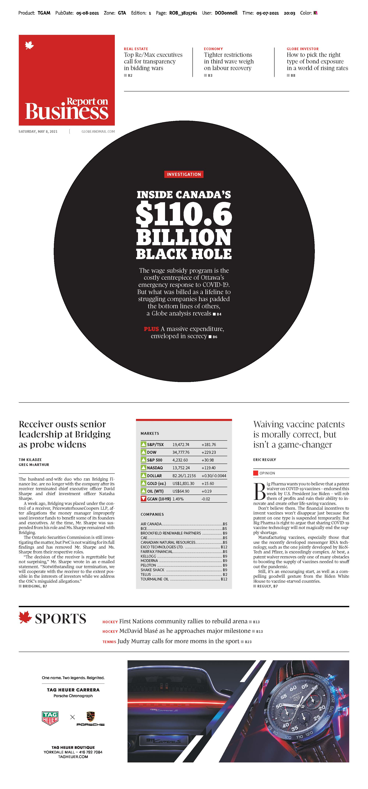
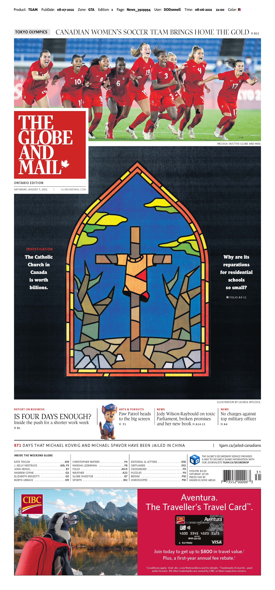
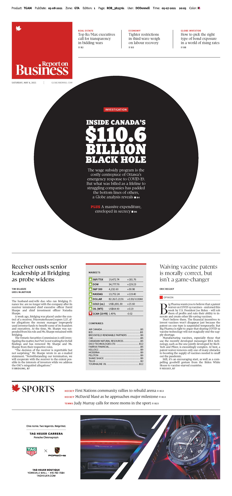
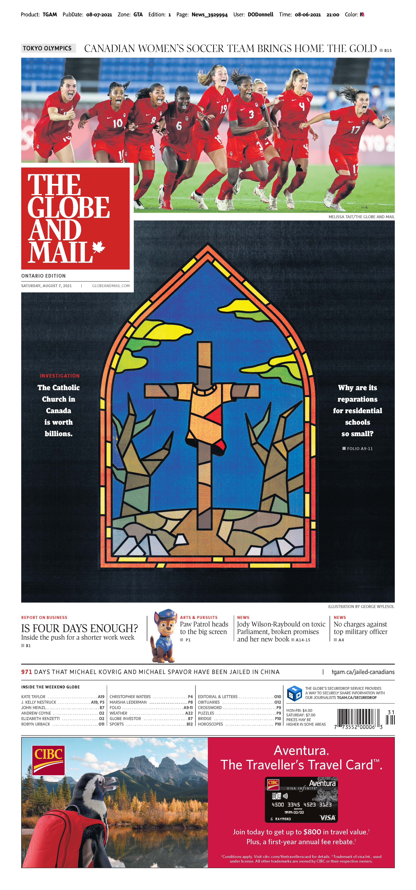

Working at the intersection of journalism and data science
bit.ly/3xhtUWd
You can also find the GitHub repository for this presentation at:
About me
Tom Cardoso, investigative reporter
at The Globe and Mail
I’m going to focus this talk on how journalism and data work together. We won’t deal in methods at all — you already know all of that, or at least know how to learn that stuff.
Instead, I want to talk a bit about my “philosophy” for data-driven reporting.
Some of the stuff we’ll cover today:
- What does this job look like?
- Why data?
- Pitching and conceptualizing stories
- Finding data
- Reporting
- All of that should take about 30 minutes. After that, we can have an open discussion.
The job
Journalism is about many things — but, in its purest form, I think it is about holding powerful institutions and individuals accountable for their actions, and spurring reform wherever it is needed.
“Okay, sure,” you might say. “But what does your job actually look like in practice?”
Answer: A whole lot of this…
… and this…

… and this.
We’ll get more into the process shortly, but in essence, it looks something like this:
- I find a topic I want to explore, then pitch a story.
- Next comes reporting: Research, filing freedom of information requests, connecting with people (also known as source-building), finding and analyzing data, etc.
- Then writing.
- Then more reporting, back to writing, etc.
- Finally, we publish.
 



All of those stories relied on statistical and data science techniques, and I used R (including a framework we developed at The Globe, startr) for almost all of the analysis work.
To be clear: I am not a data scientist. I have no formal training or background in statistics or R. That means I make a ton of mistakes!
I also don’t consider myself a “data journalist.” Instead, I’m a reporter that (often, but not always) uses data.
On data
(I realize I’m preaching to the choir here)
Data is an extremely powerful journalistic tool that reporters don’t know how to use.
A lot of reporting is anecdotal. Several reliable sources have told us X is happening, so we write that story. It’s an essentially qualitative process.
Data-driven reporting lets us approach problems from the opposite direction. Experts have told us for years they believe prison risk assessments are systemically biased against Indigenous and Black people (qualitative). With data, we can prove it (quantitative).
Pitching
All stories start with a pitch. For simpler stories, they’re often short — perhaps just a paragraph — while ones for major investigative projects are often several pages long.
Pitches are about subjects or issues, not about data.
I never start a story by saying “I have this data, what could I do with it?” That’s a recipe for disaster.
Instead, I pick a topic I care about and think deserves scrutiny, then explore it, sometimes (but not always) with a hypothesis I’d like to test.
A good pitch will tell you:
- What is the issue we want to explore? Who is being harmed?
- Why are we doing this story now? What makes it relevant? (We call this the story’s “hook.” You don’t always need to have one, but it helps.)
- What are the major findings of our reporting, if they’re already known?
- Who are we profiling or featuring? Journalism is storytelling. What is the narrative like?
- Finally, for investigations: What is the desired impact of our story? What kind of reform do we want to see?
For data-driven stories, the data is part of the reporting. We go looking for the right data once we know what kind of story we want to tell.
I don’t start with the data. I start with the story or project, and then work backwards from that idea to find the data I need for the story. Not the other way around.
Finding data
Open data is terrible, and mostly useless.
Powerful institutions have strong self-preservation instincts. They’re not going to publish stuff that’s going to embarrass them.
Because of that, with a few exceptions, if data is being openly shared by an organization, it’s because they decided that data was low risk — and, thus, useless to us.
If we want to hold governments or others institutions accountable, we need to procure our data elsewhere.
A few options here: You could make your own data (by scraping it) or obtain it by making connections (negotiating for it).
Or you could use my favourite method and file a freedom of information request.
(FOIs are an amazing tool for data journalism. If you want to learn more about that, you can check out my talk on this here.)
On reporting a data-driven story
On analysis
Data-driven reporting is iterative. Research and conversations with sources inform the data analysis, which then informs the next round of conversations, and so on.
Data can be manipulated, so a lot of my analysis is about testing what I’m hearing in my reporting. This means I’m often trying to use the data to disprove my findings. If I can’t do that, I know I have a real finding.
Finding experts
Most of my analyses rely on simple stuff: means, medians, aggregations, finding simple trends.
For anything more advanced, I need to find methods experts. I’ve asked Rohan about advanced stats stuff more times than I can count!
Having this stable of reliable experts is key. They’re also able to challenge my assumptions and help me refine my code.
Check your ego at the door
You can’t run an analysis without understanding the topic you’re examining. I’ve seen many analyses where the person didn’t care to understand, say, the criminal justice system, real estate or government finance before jumping into the data.
You need that qualitative depth — which you’ll only get by talking to people — if you’re going to conduct a responsible data analysis.
The best reporters assume they know nothing. Data scientists should do the same!
Documentation
A big part of data-driven reporting is documenting the process. This means we write painstakingly long methodology stories that detail how we got our data, what we did to it, and why. These are not written as technical documents, and are (ideally) jargon-free — they’re meant to be read by laypeople. If a normal person can’t understand it, you need to rewrite it!
“Peer review”
The Globe has a verification process for complex data projects. A data-savvy journalist unaffiliated with the story examines the code books and findings, ensures the analysis makes sense, the code is error-free, and that they can arrive at the same conclusions.
Open-sourcing analyses is a work in progress. I’ve open-sourced code projects at The Globe before, but never the notebook for a data-driven story. (Hoping to change that very soon, though!)